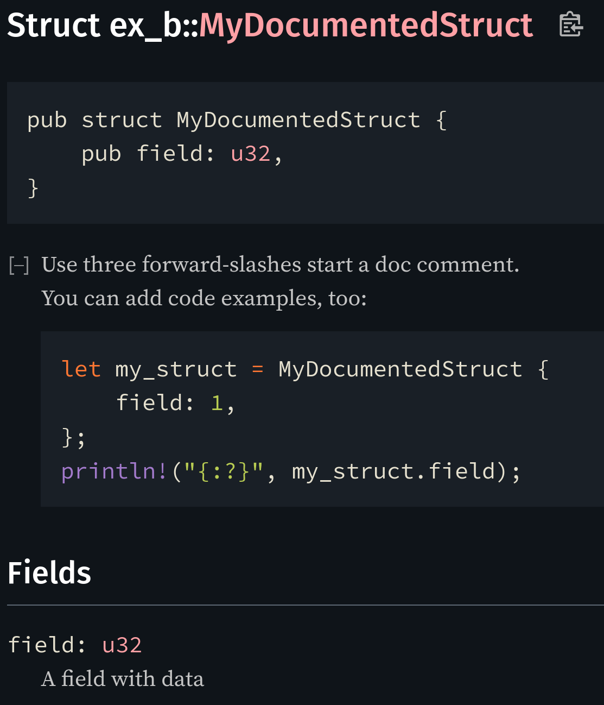

Part 2: Create Engineering
Gabriel Nützi, gabriel.nuetzi@sdsc.ethz.ch
February 16, 2025, Part 1
How to use these slides:
Thanks to the following contributors who fixed typos and mistakes:
The ORDES Team at SDSC, who helped me fixing typos & bugs.
Gerry Bräunlich, Michael Kefeder & Stefan Tüx who allowed me to attend the Rust Fest and pointing me to interesting teaching material.
External:
The Rust compiler rustc 🦀 will convert your code to
machine-code ⚙️.
Python is an interpreter.
It has a strong type system (algebraic types: sum types, product types).
It was invented in 2009 by Mozilla (Firefox) - Rust Foundation as the driver today.
Note: 10% of Firefox is in Rust for good reasons you will realize in the following.
A few selling points for python programmers.
The syntax* is similar and as easy to read as in Python.
#[derive(Debug)]
struct Apple {
name: String
}
fn grow() -> Vec<Apple> {
let apples = vec![Apple{name: "a".to_string()},
Apple{name: "b".to_string()}];
for b in &apples {
println!("Apple: {b:?}");
}
apples
}@dataclass
class Apple:
name: str
def grow() -> List[Apple]:
apples = [Apple("a"),
Apple("b")]
for b in apples:
print(f"Apple: {b.name}")
return apples*: 80% you will encounter is very readable (except macros etc.).
Compiled language, not interpreted.
State-of-the-art machine-code generation using LLVM.
No garbage collector (GC) getting in the way of execution.
def run():
d = { "a":1, "b":2 } # Memory is allocated on the heap.
run()Question: Does the memory of d still
exist after run()?
We don’t know 🤷
Usable in embedded devices, operating systems and demanding websites.
Strong type system helps prevent silly bugs 🐞:
def concat(numbers: List[str]) -> str:
return "-".join(numbers)
concat(["1", "2", "30", 4, "5", "7", "10"])Explicit errors instead of exceptions ❗(later):
def main():
file_count = get_number_of_files()
if file_count is None:
print("Could not determine file count.")Question: Is this error
handling correct if:
get_number_of_files = lambda: int(sys.argv[0])
Ownership Model: Type system tracks lifetime of objects.
None.Programs don’t trash your system accidentally
unsafe).Experience: “♥️ If it compiles, it is more often correct. ♥️”
Enables compiler driven development.
100% code coverage:
Python:
def get_float(num: str | float) -> float:
match (num):
case str(num):
return float(num)You trust mypy which is not enforced at
runtime.
Rust:
enum StrOrFloat {
MyStr(String),
MyFloat(f64),
}
fn get_float(n: StrOrFloat) -> f64 {
match n {
StrOrFloat::MyFloat(x) => x,
}
}Experience: “♥️ If it compiles, it is more often correct. ♥️”
struct and
enums.Rust is fast 🚀. Comparable to
C++/C, faster than go.
Rust.Rust is concurrent ⇉ by design (safe-guarded by the ownership model).
Learning a new language teaches you new tricks:
Rust is a young, but a quickly growing platform:
Read the checklist, use it!
Make your API
Next up: Some low-hanging fruits
pub struct S {
first: First,
second: Second,
}
impl S {
// Not get_first.
pub fn first(&self) -> &First {
&self.first
}
// Not get_first_mut, get_mut_first, or mut_first.
pub fn first_mut(&mut self) -> &mut First {
&mut self.first
}
}Other example: conversion methods as_, to_,
into_, name depends on:
As long as it makes sense public types should implement:
CopyCloneEqPartialEqOrdPartialOrdHashDebugDisplayDefaultserde::Serializeserde::Deserializepub fn add(x: u32, y: u32) -> u32 {
x + y
}
/// Adds two values that implement the `Add` trait,
/// returning the specified output
pub fn add_generic<O, T: std::ops::Add<Output = O>>(x: T, y: T) -> O {
x + y
}Copy
types/// Some very large struct
pub struct LargeStruct {
data: [u8; 4096],
}
/// Takes owned [LargeStruct] and returns it when done. This is costly!
pub fn manipulate_large_struct(mut large: LargeStruct) -> LargeStruct {
todo!()
}
/// Just borrows [LargeStruct]. This is cheap!
pub fn manipulate_large_struct_borrowed(large: &mut LargeStruct) {
todo!()
}cargo doc --open/// A well-documented struct.
/// ```rust
/// # // lines starting with a `#` are hidden
/// # use ex_b::MyDocumentedStruct;
/// let my_struct = MyDocumentedStruct {
/// field: 1,
/// };
/// println!("{:?}", my_struct.field);
/// ```
pub struct MyDocumentedStruct {
/// A field with data
pub field: u32,
}
Create examples to show users how to use your library
tree
.
├── Cargo.lock
├── Cargo.toml
├── examples
│ └── say_hello.rs
└── src
└── lib.rscargo run --example say_hello
...
Hello, henkdieter!Make the type system work for you!
/// Fetch a page from passed URL
fn load_page(url: &str) -> String {
todo!("Fetch");
}
fn main() {
let page = load_page("https://teach-rs.tweede.golf");
let crab = load_page("🦀"); // Ouch!
}&str is not restrictive enough: not all
&str represent correct URLs
struct Url<'u> {
url: &'u str,
}
impl<'u> Url<'u> {
fn new(url: &'u str) -> Self {
if !valid(url) {
panic!("URL invalid: {}", url);
}
Self { url }
}
}
fn valid(url: &str) -> bool {
url != "🦀"
}fn load_page(remote: Url) -> String {
todo!("load it");
}
fn main() {
// Not good
let c = load_page(Url::new("🦀"));
}thread 'main' panicked at
'URL invalid: 🦀', src/main.rs:11:7
note: run with `RUST_BACKTRACE=1` ...url crate.cargo clippy
cargo fmtUse the state-of-the-art repository-template rust.
Learning common Rust patterns makes understanding new code easier
const PATTERNS: &[Pattern] = &[
Pattern::new("Newtype"),
Pattern::new("RAII with guards"),
Pattern::new("Typestate"),
Pattern::new("Strategy"),
];
fn main() {
for pattern in PATTERNS {
pattern.introduce();
pattern.show_example();
pattern.when_to_use();
}
}A small but useful pattern.
pub struct Imei(String)That’s it!
pub enum ValidateImeiError { /* - snip - */}
pub struct Imei(String);
impl Imei {
fn validate(imei: &str) -> Result<(), ValidateImeiError> {
todo!();
}
}
impl TryFrom<String> for Imei {
type Error = ValidateImeiError;
fn try_from(imei: String) -> Result<Self, Self::Error> {
Self::validate(&imei)?;
Ok(Self(imei))
}
}
fn register_phone(imei: Imei, label: String) {
// We can certain `imei` is valid here
}New types solve some problems:
impls for external traits
on external types.url example from before)More robust resource handling.
Do you know of an example?
pub struct Transaction<'c> {
connection: &'c mut Connection,
did_commit: bool,
id: usize,
}
impl<'c> Transaction<'c> {
pub fn begin(connection: &'c mut Connection)
-> Self {
let id = connection.start_transaction();
Self { did_commit: false, id, connection }
}
pub fn query(&self sql: &str) {
/* - snip - */
}
pub fn commit(self) {
self.did_commit = true;
}
}impl Drop for Transaction<'_> {
fn drop(&mut self) {
if self.did_commit {
self
.connection
.commit_transaction(self.id);
} else {
self
.connection
.rollback_transaction(self.id);
}
}
}Encode state in the type.
O.pub enum Ready {} // No variants, cannot be initializedImplement methods on O only
for relevant states.
Methods on O that update
state take owned self and return
instance with new state.
Make your type generic over its state using
std::marker::PhantomData. 👻
PhantomData<T> makes types act like they own a
T, and takes no space.
pub enum Idle {} // Nothing to do.
pub enum ItemSelected {} // Item was selected.
pub enum MoneyInserted {} // Money was inserted.
pub struct CandyMachine<S> {
state: PhantomData<S>,
}
impl<S> CandyMachine<S> {
/// Just update the state
fn into_state<NS>(self) -> CandyMachine<NS> {
CandyMachine { state: PhantomData, }
}
}
impl CandyMachine<Idle> {
pub fn new() -> Self {
Self { state: PhantomData }
}
}impl CandyMachine<Idle> {
fn select_item(self, item: usize)
-> CandyMachine<ItemSelected> {
println!("Selected item {item}");
self.into_state()
}
}
impl CandyMachine<ItemSelected> {
fn insert_money(self)
-> CandyMachine<MoneyInserted> {
println!("Money inserted!");
self.into_state()
}
}
impl CandyMachine<MoneyInserted> {
fn make_beverage(self)
-> CandyMachine<Idle> {
println!("There you go!");
self.into_state()
}
}References: Look at serde::Serialize and
serialize_struct which starts the typestate
pattern.
Select behavior dynamically.
Trait objects work well here!
trait PaymentStrategy {
fn pay(&self);
}
struct CashPayment;
impl PaymentStrategy for CashPayment {
fn pay(&self) {
println!("🪙💸");
}
}
struct CardPayment;
impl PaymentStrategy for CardPayment {
fn pay(&self) {
println!("💳");
}
}fn main() {
let method = todo!("Read input");
let strategy: &dyn PaymentStrategy
= match method {
"card" => &CardPayment,
"cash" => &CashPayment,
_ => panic!("Oh no!"),
};
strategy.pay();
}What not to do
A common pitfall you’ll want to avoid.
use std::ops::Deref;
struct Animal {
name: String,
}
impl Animal {
fn walk(&self) {
println!("Tippy tap")
}
fn eat(&self) {
println!("Om nom")
}
fn say_name(&self) {
// Animals generally can't speak
println!("...")
}
}struct Dog {
animal: Animal
}
impl Dog {
fn eat(&self) {
println!("Munch munch");
}
fn bark(&self) {
println!("Woof woof!");
}
}
impl Deref for Dog {
type Target = Animal;
fn deref(&self) -> &Self::Target {
&self.animal
}
}
fn main (){
let dog: Dog = todo!("Instantiate Dog");
dog.bark();
dog.walk();
dog.eat();
dog.say_name();
}Woof woof!
Tippy tap
Munch munch
...Even overloading works!
Dog is
no subtype of Animal.Animal are not implemented
on Dog automatically.Deref and DerefMut
intended for ‘pointer-to-T’ to T
conversions.. ‘converts’
self from Dog to AnimalConfusion: for OOP programmers it’s incomplete, for Rust programmers it is unidiomatic.
structs.AsRef and AsMut for explicit
conversion.clone() to satisfy the borrow checker.unwrap() or expect() to handle
conditions that are recoverable or not impossibleTo run:
cargo test
...
running 2 tests
test tests::test_swap_items ... ok
test tests::test_swap_oob - should panic ... ok
test result: ok.
2 passed; 0 failed; 0 ignored; 0 measured;
0 filtered out;
finished in 0.00s
[..]## Don't capture stdout while running tests
cargo test -- --nocaptureRust compiles your test code into binary using a test harness that itself has a CLI:
/// Swaps two values at the `first` and
/// `second` indices of the slice.
fn swap(slice: &mut [u32],
first: usize, second: usize) {
let tmp = slice[second];
slice[second] = slice[first];
slice[first] = tmp;
}
/// This module is only compiled in `test` configuration.
##[cfg(test)]
mod tests {
use crate::swap;
// Mark function as test.
#[test]
fn test_swap() {
let mut array = [0, 1, 2, 3, 4, 5];
swap(&mut array[..], 1, 4);
assert_eq!(array, [0, 4, 2, 3, 1, 5]);
}
#[test]
#[should_panic] // This should panic.
fn test_swap_oob() {
let mut array = [0, 1, 2, 3, 4, 5];
swap(&mut array[..], 1, 6);
}
}cargo test.tests folder.tree
├── Cargo.toml
├── examples
│ └── my_example.rs
├── src
│ ├── another_mod
│ │ └── mod.rs
│ ├── bin
│ │ └── my_app.rs
│ ├── lib.rs
│ ├── main.rs
│ └── some_mod.rs
└── tests
└── integration_test.rsYou can even use examples in your documentation as tests
/// Calculates fibonacci number n.
///
/// # Examples
/// ```
/// # use example::fib;
/// assert_eq!(fib(2), 1);
/// assert_eq!(fib(5), 5);
/// assert_eq!(fib(55), 55);
/// ```
pub fn fib(n: u64) -> u64 {
if n <= 1 {
n
} else {
fib(n - 1) + fib(n - 2)
}
}cargo test --docGood benchmarking is Hard